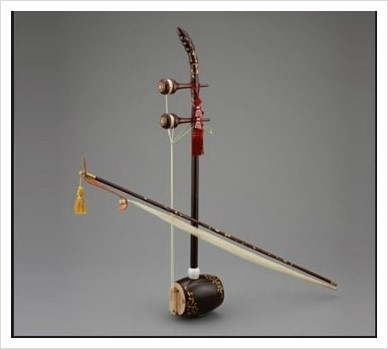

해금은 두 줄을 현으로 마찰시켜 연주하는 찰현악기로 한국의 전통악기이며, 나의 직업이자 전공이다.
네이버 지식백과의 정의는 이렇다.
해금은 두 줄로 된 찰현악기로, 깡깡이, 앵금 등의 이름으로도 불렸다.
해금은 통, 복판, 입죽(줏대, 기둥대)과 활대로 이루어져 있으며 작은 울림통에 세로로 대를 세우고 울림통과 대를 2개의 줄로 연결하였다.
공명통은 대나무를 주로 쓰는데, 대의 뿌리 부분을 있는 그대로 다듬은 원통을 상품으로 친다.
양쪽으로 뚫린 공명통의 한쪽 입구는 열어두고 한쪽 입구는 얇게 다듬은 오동나무 복판을 붙여 막는다.
대나무로 만든 활대에는 말총활을 달고 활에 송진을 먹인다.
오른손은 활대로 중현과 유현의 사이에서 각 줄을 문질러 소리를 내고 왼손은 두 줄을 한꺼번에 감아 잡고 쥐거나 떼면서 음높이를 조절한다.
해금은 고려시대에 우리나라에 들어온 후 궁중음악과 민속음악에 이르기까지 폭넓게 연주되고 있다.
관현합주에 해금이 편성될 때, 지속음을 내면서 관악기의 선율을 따라 연주하므로 비사비죽(非絲非竹)이라고 하여 연주 특성상 관악기로 분류되기도 한다.